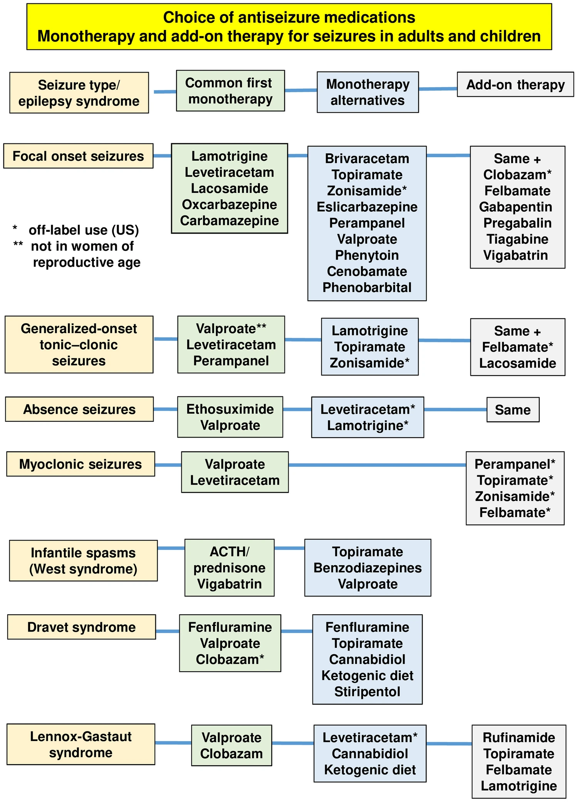
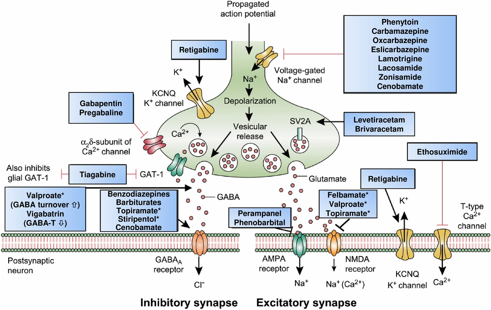
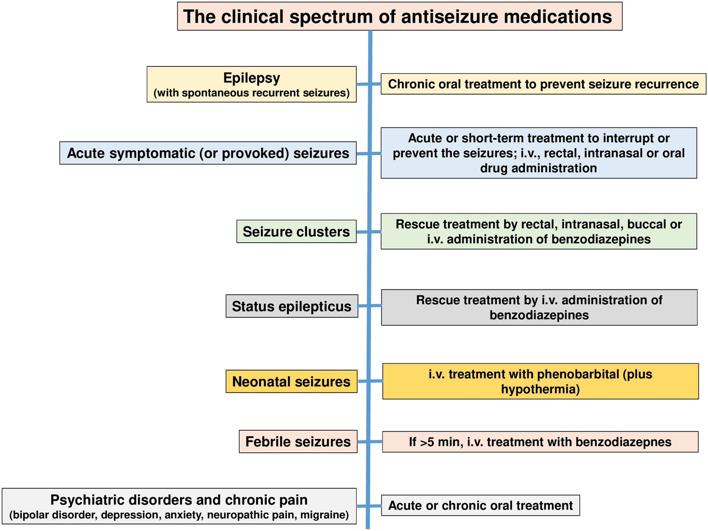

Seizure Management
Status Epilepticus
Clinical Reference Cards
Courtesy of Dr. Gena Ghearing
Management of Convulsive Status Epilepticus
Neurocritical Care Society Guidelines
The following table outlines the time‐based phases, interventions, and dosing regimens:
| Phase | Time Range | Intervention & Dosing |
|---|---|---|
| Stabilization Phase | 0–5 minutes |
|
| Initial Therapy Phase | 5–20 minutes |
|
| Second-line Therapy | 20–40 minutes |
|
| Refractory Therapy | ≥ 40 minutes |
|
| Breakthrough/Recurrence | N/A |
|
| Additional Therapies | N/A |
|
Anti-Seizure Medications
Below is a list of anti-seizure medications (ASMs) with typical adult dosing ranges, common side effects, and their therapeutic ranges (if applicable) along with the metabolite measured:
| Medication | Typical Adult Dose Range | Common Side Effects | Therapeutic Range |
|---|---|---|---|
| Brivaracetam | Oral or IV: 100–200 mg/day (in 2 divided doses) | Drowsiness, dizziness, fatigue, irritability | N/A |
| Carbamazepine | Oral: 800–1200 mg/day (in 2 divided doses; range ~400–1600 mg) | Dizziness, drowsiness, diplopia, ataxia | Carbamazepine 4–12 µg/mL; CBZ‑10,11‑epoxide 0.4-4 μg/mL |
| Cannabidiol (rare, for Dravet/LGS) | Oral: 10–20 mg/kg/day (in 2 doses) | Diarrhea, fatigue, decreased appetite, somnolence | N/A |
| Cenobamate (new) | Oral: 200 mg/day (after gradual titration; max 400 mg/day) | Dizziness, somnolence, fatigue, headache, nausea | 3.8-54.6 mg/L |
| Clobazam (adjunct for LGS) | Oral: 10–40 mg/day (usually divided BID) | Sedation, drowsiness, drooling | Clobazam 30-300 ng/mL; N-desmethylclobazam 300-3000 ng/mL/td |
| Clonazepam (rarely used long-term) | Oral: 0.5 to 1.5 mg/day in 1 to 3 divided doses Adjunctive therapy: 0.5 to 1 mg/day in 1 to 3 divided doses | Sedation, drowsiness, cognitive impairment, tolerance | N/A |
| Eslicarbazepine acetate | Oral: 800–1600 mg/day (usually once daily) | Dizziness, headache, diplopia, somnolence | N/A |
| Ethosuximide | Oral: 500–1500 mg/day (maximum ~60 mg/kg/day; for absence seizures only) | Nausea, vomiting, lethargy, headache, weight loss | 40–100 µg/mL |
| Felbamate (rarely used – toxicity) | Oral: 1200–3600 mg/day (divided TID–QID) | Sedation, nausea, vomiting, risk of aplastic anemia/liver failure | NA |
| Fenfluramine | Oral: 0.2-0.35 mg/kg BID | Hypertension, pulmonary hypertension, valvular Heart Disease, weight loss | <50 µg/L |
| Gabapentin (rarely effective for epilepsy) | Oral: 900–3600 mg/day (divided TID) | Dizziness, somnolence, peripheral edema, ataxia | N/A |
| Lacosamide | Oral or IV: 200–400 mg/day and maximum 600 mg/day (divided BID) | Dizziness, headache, nausea | 10-20 mg/L |
| Lamotrigine | Oral: 100–400 mg/day (in 2 divided doses; slow titration. Note that dosing changes for patients taking drugs that alter metabolism) | Rash (risk of Stevens–Johnson syndrome), dizziness, headache | 3-15 µg/mL |
| Levetiracetam | Oral or IV: 1000–4000 mg/day (divided BID) | Drowsiness, dizziness, irritability, behavioral changes | 10-40 µg/mL |
| Oxcarbazepine | Oral: 600–2400 mg/day (divided BID) | Dizziness, sedation, hyponatremia | 3–35 µg/mL (MHD) |
| Perampanel | Oral: 8–12 mg/day (once daily at bedtime) | Dizziness, somnolence, hostility, irritability, falls | 200–600 ng/mL |
| Phenobarbital | Oral or IV: 60–200 mg/day (usually once at bedtime) | Sedation, cognitive impairment, ataxia, dependence | 10–40 µg/mL |
| Phenytoin | Oral or IV: 300–400 mg/day (divided BID; ~5–7 mg/kg/day to maintain level 10–20 µg/mL) | Nystagmus, ataxia, gingival hyperplasia, hirsutism, sedation | 10–20 µg/mL (zero-order) |
| Primidone (rarely used) | Oral: 750–1500 mg/day (divided BID–TID) | Sedation, ataxia, nausea, dizziness | N/A |
| Pregabalin (rarely used for epilepsy) | Oral: 150–600 mg/day (divided BID) | Dizziness, somnolence, weight gain, peripheral edema | N/A |
| Rufinamide (rare, LGS) | Oral: 1800–3200 mg/day (divided BID) | Dizziness, fatigue, nausea, vomiting | N/A |
| Stiripentol (rare, Dravet) | Oral: 50 mg/kg/day (divided TID) | Drowsiness, ataxia, loss of appetite | N/A |
| Tiagabine (rarely used) | Oral: 32–56 mg/day (divided BID–QID) | Dizziness, nervousness, fatigue, tremor | N/A |
| Topiramate | Oral: 100–400 mg/day (divided BID) | Cognitive slowing, weight loss, paresthesias, kidney stones | 5-20 µg/mL |
| Valproate (Valproic acid) | Oral or IV: 1000–3000 mg/day (divided BID–TID; ~15–60 mg/kg/day) | GI upset, tremor, weight gain, hair loss, hepatotoxicity, thrombocytopenia | 50-125 mcg/mL |
| Vigabatrin (rare – infantile spasms) | Oral: 2000–3000 mg/day (divided BID) | Visual field defects, sedation, irritability | N/A |
| Zonisamide | Oral: 100–400 mg/day (once daily or divided BID) | Dizziness, somnolence, loss of appetite, weight loss | 10–40 mcg/mL |
*Note:* The doses listed are typical adult maintenance ranges. Actual prescribing should be individualized, and many medications require slow titration or weight‐based dosing in children. Always consult detailed references for specific dosing and monitoring recommendations.
References: Epilepsy Foundation; ILAE; UpToDate drug monographs.
ASM Flowcharts
These flow charts provide guidance on anti-seizure medication selection based on seizure type, mechanisms of action, and clinical applications:
Choice of Anti-Seizure Medications
Monotherapy and add-on therapy options for seizures in adults and children:
Mechanisms of Action
Neurobiological targets of commonly used anti-seizure medications:
Clinical Spectrum of Anti-Seizure Medications
Treatment approaches for different types of epilepsy in adults and children:
Reference: Löscher, W., Klein, P. The Pharmacology and Clinical Efficacy of Antiseizure Medications: From Bromide Salts to Cenobamate and Beyond. CNS Drugs 35, 935–963 (2021). https://link.springer.com/article/10.1007/s40263-021-00827-8
ASM Withdrawal
ASM withdrawal should be performed gradually under medical supervision after careful consideration of seizure recurrence risk factors.
Key Considerations for ASM Withdrawal:
- Minimum 2 years seizure-free before attempting withdrawal
- Longer seizure-free period for patients with prior relapses or refractory epilepsy
- Gradual tapering over months (typically 3-6 months)
- Higher recurrence risk with multiple seizure types, abnormal EEG, or structural lesions
- Consider driving restrictions during and after medication withdrawal
Use the prediction tool below to estimate seizure recurrence risk after medication withdrawal, but always consult your epilepsy specialist before making any medication changes.
Management of Refractory Epilepsy
| Therapy Category | Description/Details |
|---|---|
| Definition | Drug-resistant epilepsy (DRE) is defined as failure to achieve sustained seizure freedom after trials of two appropriate ASMs. Approximately one-third of patients have DRE, which increases risks (including SUDEP). Early referral to an epilepsy center is essential. |
| Surgical Options | Resection, lesionectomy, lobar/multilobar resections, or hemispherectomy in catastrophic cases; corpus callosotomy may reduce drop attacks. |
| Neuromodulation Techniques |
VNS: Vagus nerve stimulation (VNS) has demonstrated that approximately 49% of patients achieve a ≥50% reduction in seizure frequency within 1–2 years (see VNS outcomes).
RNS: Responsive neurostimulation (RNS) offers a median seizure reduction of around 60% over several years (see RNS outcomes). DBS: Deep brain stimulation (DBS) targeting the anterior nucleus of the thalamus has shown a median seizure reduction of about 56% in controlled trials (see DBS outcomes). |
| Dietary & Other Therapies | Ketogenic diet (or variants), immunotherapies, etc. |
| References | ILAE/AAN recommendations; ACNS guidelines; UpToDate; Epilepsy Foundation. |